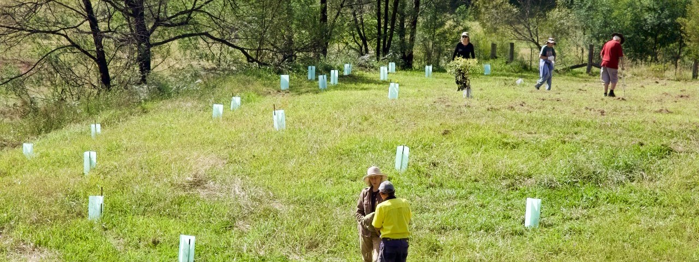
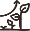

Give your team a day to bring back the bush.
Australia is home to plants and animals found nowhere else on Earth, and your team can play a practical part in protecting them. Step away from the office for a hands-on day outdoors, working together alongside our rangers and community nurseries to care for places that need it.
Enquire nowGet hands-on with nature.
Depending on the site and season, your team might remove invasive plants, restore habitat, help out in a community nursery or, when planting is in season, put native plants in the ground, all while learning about the local wildlife you are helping to protect.
Your day in the bush
Every day is different. Activities and timings may vary depending on the site, season and conservation needs.
Arrive & connect
Welcome, Acknowledgement of Country and introductions.

Get stuck in
Site overview, safety briefing, then team bonding and hands-on activities.
Refuel
Lunch break. Catering is included.
Keep going
More hands-on conservation work, where most of the day’s progress happens.
Wrap up
Reflection, and a guided site walk where available.
Two ways to spend a corporate volunteer day.

Grow the plants that bring nature back.
Volunteer with our network of community-led bushfire and flood recovery nurseries, which supported the planting of our one millionth tree in October 2024. Our next goal is eight million more trees by 2030, helping rebuild ecosystems and strengthen landscape resilience.
Your team will nurture seedlings, learn from experts about native species, and understand the critical role these plants play in healthy ecosystems. A hands-on experience that aligns with your ESG or CSR goals.

Bring habitat back, by hand.
Take part in on-ground restoration that supports the health, maintenance and cleanup of Australia’s parks and urban green spaces.
Your team will work outdoors to remove invasive species, plant native vegetation, and restore habitats that support wildlife and improve community green spaces. These sessions not only protect nature, but help maintain parks as places for connection, wellbeing and shared enjoyment.
What a volunteer day looks like.


Explore corporate volunteering sites across Australia.
Pick a state to see its sites, then open it to see them on a map and find the details for each one.
New South Wales
4 nurserys, 4 national parks, 3 parks, 1 conservation area, 1 reserve and 1 wetlands, between 7 and 112 km from the Sydney CBD.
- Belmont NurseryRedhead Nursery 105 km
- Congwong Beach, Kamay-Botany Bay National ParkLa Perouse National Park 14 km
- Glenrock State Conservation AreaHighfields Conservation Area 112 km
- Hawkesbury Community NurseryMulgrave Nursery 44 km
- Lane Cove National ParkChatswood West National Park 10 km
- Lane Cove National ParkChatswood West National Park 10 km
- Magdala ParkNorth Ryde Park 10 km
- Middle Head - Gubbuh GubbuhMosman Reserve 7 km
- Morgans Creek Picnic Area, Georges River NPReversby Heights National Park 22 km
- Tempe WetlandsTempe Wetlands 8 km
- Wildplant Community NurseryOurimbah Nursery 59 km
- Wollondilly Shire - Bargo River ReserveTahmoor Park 71 km
- Wollondilly Shire - Robin Davies Community NurseryPicton Nursery 66 km
- Wollondilly Shire - Stonequarry Bush Tucker GardenPicton Park 64 km
Victoria
12 parks, 1 wetlands and 1 nursery, between 3 and 49 km from the Melbourne CBD.
- Albert ParkAlbert Park Park 3 km
- Brimbank ParkKeilor East Park 13 km
- Corhanwarrabul WetlandsScoresby Wetlands 24 km
- Jell's ParkWheelers Hill Park 21 km
- Koomba ParkWantirna Park 24 km
- Maroondah Reservoir ParkHealsville Park 49 km
- Point Cook Coastal ParkPoint Cook Park 18 km
- Shepherd's Bush Community GardenGlen Waverley Nursery 21 km
- Shepherds BushWantirna Park 22 km
- Studley ParkKew Park 4 km
- Wattle ParkBurwood Park 13 km
- Werribee ParkWerribee South Park 29 km
- Woodlands Historic ParkGreenvale Park 23 km
- Yarra Bend ParkFairfield Park 4 km
South Australia
7 parks, 3 national parks, 2 nurserys and 1 beach, between 9 and 62 km from the Adelaide CBD.
- Anstey Hill Recreation ParkTea Tree Gully Park 16 km
- Belair National ParkBelair National Park 10 km
- Black Hill Conservation ParkAthelstone Park 13 km
- Charleston Conservation ParkCharleston Park 27 km
- Glenthorne National Park - Ityamaiitpinna YartaO'Halloran Hill National Park 15 km
- Morialta Conservation ParkWoodforde Park 9 km
- Onkaparinga River National ParkPort Noarlunga South National Park 26 km
- Para Wirra Conservation ParkYattalunga Park 35 km
- Sandy Creek Conservation ParkSandy Creek Park 42 km
- Semaphore Largs Dunes GroupSemaphore Beach 15 km
- The Forktree ProjectCarrickalinga Nursery 57 km
- Wangkuntila-Aldinga Conservation ParkAldinga Beach Park 42 km
- Yankalilla Community NurseryYankalilla Nursery 62 km
Western Australia
3 conservation centres, between 13 and 20 km from the Perth CBD.
- Kaarakin Black Cockatoo Conservation CentreMartin Conservation Centre 20 km
- South East Regional Centre for Urban LandcareBeckenham Conservation Centre 13 km
- The Wetlands Centre CockburnBibra Lake Conservation Centre 15 km
Queensland
1 park, 23 km from the Brisbane CBD.
- Daisy Hill Conservation ParkDaisy Hill Park 23 km
Everything you need to know.
Participants per day
Group sizes are kept small so everyone takes an active part in the work and the day stays well coordinated.
+ GST per day, tax-deductible
As a registered Australian charity with DGR status, we provide tax-deductible receipts for eligible contributions.
Minimum notice
Weekdays only. Timings vary by state, generally 9:00am–2:00pm.
Included in every day
- Expert guidance on-site coordination by rangers and conservation staff
- Equipment all tools, gloves and safety gear
- Materials native plants, seeds and restoration supplies
- Insurance & permits full coverage and site approvals
- Educational briefing the ecosystem, the threats and why today matters
- Catering included (+$200 + GST at NSW National Parks sites)
If plans change
If extreme weather or unsafe conditions arise, we and the rangers postpone the day and let you know as early as possible, at no cost. If you cancel for any other reason, a share of the $3,500 + GST day rate is retained to cover plants, permits and staff already committed:
- Cancel 21+ days beforeNo fee
- 8–20 days before25% of the day rate$875 + GST
- 4–7 days before50% of the day rate$1,750 + GST
- 0–3 days beforeFull day rate$3,500 + GST
Rescheduling is usually easier than cancelling. Talk to us first and we will try to move your team to another date.
Good for people. Good for business. Good for nature.
Get your team outdoors, working together and making a difference. Practical action in nature can strengthen teams, support communities and help nature thrive.
For your employees
- Connect with nature and experience Australia’s wild spaces firsthand
- Make a difference and contribute to environmental restoration and biodiversity
- Strengthen team bonds through hands-on, meaningful team-building
- Learn & grow, gaining insights into local ecosystems, native plants and wildlife
For your business
- Boost employee engagement and strengthen teamwork, morale and culture
- Enhance CSR & brand reputation and demonstrate genuine commitment to sustainability
- Create a positive public image: consumers favour businesses with environmental values
- Offer a unique experience where employees step away from screens to make a tangible difference
For communities
- Restore & protect ecosystems and support restoration and enhance biodiversity
- Build climate resilience and help communities adapt to bushfires and environmental change
- Improve public spaces and contribute to healthier national parks and green spaces
- Strengthen community ties and foster collaboration between businesses and locals
Our corporate volunteering program aligns with the UN Sustainable Development Goals, including:
- 15Life on Land
- 13Climate Action
- 11Sustainable Cities and Communities
- 3Good Health and Wellbeing
Ready to get into the field?
Let’s make it happen. Tell us where you’re based, how many people are on your team and when you’d like to get out there, or call our team direct for a chat.
1800 898 626- Tell us what you need Share your state, team size and preferred dates.
- Choose your experience We’ll send you options that suit your team.
- Get ready to get outdoors Once you’ve chosen your experience, we’ll sort the details. You just need to show up in closed shoes and a hat, and get stuck in.
Plan your volunteering day
The form is taking a while to load. Email fnpw@fnpw.org.au or call 1800 898 626 and we will take your enquiry directly.
We’ll be in touch within two working days. By submitting you consent to us contacting you about your enquiry.
Your questions, answered.
The most common questions about running a corporate volunteering day with us.
What is the cost, and what does it include?
The cost is $3,500 + GST per day, whatever the group size. This amount is fully tax-deductible and directly funds our projects across Australia. If catering is required at NSW National Parks, the cost is $3,700 + GST (also tax-deductible).
The participation fee covers expert guidance, all equipment, materials (native plants, seeds), insurance and permits, and educational briefings on local ecosystems.
Why is the volunteering experience paid for?
Corporate Volunteering is paid for due to its substantial coordination, resource allocation and cost recovery. Companies invest in these experiences to foster team cohesion, provide meaningful engagement, and develop employees’ connection to nature. It also supports alignment with CSR/ESG goals, which helps enhance brand reputation and contribute to sustainability initiatives.
Why is the corporate group size small?
Group sizes are kept small to enhance hands-on participation, foster a deeper connection to the environment, and facilitate a better learning opportunity. Smaller groups ensure efficient coordination, meaningful contributions from every participant, and ease in logistical arrangements.
How much notice is required to book a day?
We require 21 days’ prior notice to arrange a corporate volunteering day.
Can you provide free volunteer opportunities?
Unfortunately, we are unable to offer free volunteer work. As a charity, we rely on donations and corporate volunteering events to help fund vital programs across Australia.
What are the timings for corporate volunteering days?
Corporate days run on weekdays only, approximately 9:00am–2:00pm (timings vary by state):
- NSW & VIC: 9:30am–2:00pm
- QLD: 8:30am–2:00pm
- SA & WA: 9:30am–2:30pm
Do you offer weekend volunteering?
No, we do not run corporate volunteering events on weekends.
Can smaller groups or half-day sessions be arranged?
Yes, we can arrange half-day sessions (3 hours) and groups of fewer than 10 people. However, the cost of the day remains $3,500 + GST. Smaller groups may be combined with other corporate teams.
Is equipment provided?
Yes, all equipment required for the activities is provided on the day, including tools, gloves and safety gear.
Is catering included?
Yes, catering is included. For NSW National Parks sites, if catering is required, the total cost is $3,700 + GST, which is also fully tax-deductible.
What is the postponement and cancellation policy?
If extreme weather or unsafe conditions arise, we and the rangers will let you know as soon as possible and postpone the day, at no cost.
If you decide to cancel for other reasons: 21+ days 0% fee · 8–20 days 25% · 4–7 days 50% · 0–3 days 100%.
Can my company plant trees?
Tree planting corporate volunteering can only occur at certain times of the year, typically from June to September, and varies by location. Tree planting is less common at sites closer to the CBD.
While tree planting may not always be an option, there are other impactful activities available, such as supporting recovery nurseries and participating in restoration sessions in national parks.